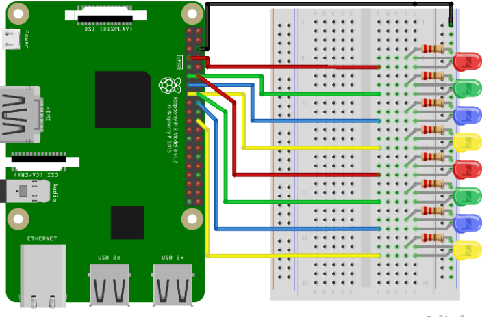

வெளியீட்டுடன் வரிசையைப் பயன்படுத்தி பாயும் LED களை உருவாக்குதல்
இந்த அத்தியாயத்தில் நாம் பல GPIO பின்களை வரிசையாக எரியச் செய்து மற்றும் அணைப்பதன் மூலம் ஒரு "பாயும்" விளைவை உருவாக்குவோம்.
எங்களுக்கு என்ன தேவை?
இதற்கு உங்களுக்கு தேவை:
- A Raspberry Pi with Raspian, internet, SSH, with Node.js installed
- The onoff module for Node.js
- 1 x Breadboard
- 8 x 220 Ohm resistor
- 8 x Through Hole LED
- 9 x Female to male jumper wires
குறிப்பு:
நீங்கள் பயன்படுத்தும் LED வகையைப் பொறுத்து உங்களுக்குத் தேவையான மின்தடை நாம் பயன்படுத்துவதிலிருந்து வேறுபட்டிருக்கலாம். பெரும்பாலான சிறிய LED க்களுக்கு ஒரு சிறிய மின்தடை மட்டுமே தேவை, சுமார் 200-500 ஓம்கள். நீங்கள் பயன்படுத்தும் சரியான மதிப்பு பொதுவாக முக்கியமானது அல்ல, ஆனால் மின்தடையின் மதிப்பு சிறியதாக இருந்தால், LED பிரகாசமாக ஒளிரும்.
வெவ்வேறு கூறுகளின் விளக்கங்களுக்கு மேலே உள்ள பட்டியலில் உள்ள இணைப்புகளைக் கிளிக் செய்யவும்.
சுற்றுகளைக் கட்டும் பணி
இப்போது எங்கள் பிரெட்போர்டில் சுற்றுகளைக் கட்ட வேண்டிய நேரம் வந்துவிட்டது.
நீங்கள் மின்னணுவியலில் புதியவராக இருந்தால், Raspberry Pi க்கான மின்சாரத்தை அணைக்க பரிந்துரைக்கிறோம். மேலும் அதைச் சேதப்படுத்தாமல் இருக்க ஆன்டி-ஸ்டேடிக் பாய அல்லது கிரவுண்டிங் பட்டா பயன்படுத்தவும்.
Raspberry Pi ஐ சரியாக அணைக்க கட்டளையைப் பயன்படுத்தவும்:
pi@jassifteam:~ $ sudo shutdown -h nowRaspberry Pi இல் LED கள் ஒளிர்வதை நிறுத்திய பிறகு, Raspberry Pi இலிருந்து பவர் பிளக்கை வெளியே இழுக்கவும் (அல்லது அது இணைக்கப்பட்டுள்ள பவர் ஸ்ட்ரிப்பை அணைக்கவும்).
சரியாக அணைக்காமல் பிளக்கை இழுப்பது நினைவக கார்ட்டின் ஊழலை ஏற்படுத்தக்கூடும்.

Raspberry Pi 3 with Breadboard. Flowing LEDs circuit
மேலே உள்ள சுற்றுகளின் விளக்கப்படத்தைப் பாருங்கள்.
ஒவ்வொரு LED க்கும்:
LED 2 Tie-Point வரிசைகளுடன் இணையும் வகையில் இணைக்கவும். எங்கள் எடுத்துக்காட்டில் நாம் இணைத்தோம்:
LED1 to rows 5 (cathode) & 6 (anode) column J
LED2 to rows 8 (cathode) & 9 (anode) column J
LED3 to rows 11 (cathode) & 12 (anode) column J
LED4 to rows 14 (cathode) & 15 (anode) column J
LED5 to rows 17 (cathode) & 18 (anode) column J
LED6 to rows 20 (cathode) & 21 (anode) column J
LED7 to rows 23 (cathode) & 24 (anode) column J
LED8 to rows 26 (cathode) & 27 (anode) column Jஒவ்வொரு LED க்கும்:
220 ohm மின்தடையின் கால்களில் ஒன்றை வலது பக்கத்தில் உள்ள கிரவுண்ட் பஸ் நெடுவரிசையிலிருந்து இணைக்கவும், மற்றும் மற்ற காலை LED இன் கேதோடு காலுடன் இணைக்கும் வலது பக்க Tie-Point வரிசையில் இணைக்கவும். எங்கள் எடுத்துக்காட்டில் நாம் இணைத்தோம்:
LED1 to row 5 column I
LED2 to row 8 column I
LED3 to row 11 column I
LED4 to row 14 column I
LED5 to row 17 column I
LED6 to row 20 column I
LED7 to row 23 column I
LED8 to row 26 column Iஒவ்வொரு LED க்கும்:
Raspberry Pi இல் ஒரு GPIO பின்னுடன் ஒரு ஜம்பர் கம்பியின் பெண் காலை இணைக்கவும், மற்றும் LED இன் அனோடு காலுடன் இணைக்கும் வலது பக்க Tie-Point வரிசையில் ஜம்பர் கம்பியின் ஆண் காலை இணைக்கவும். எங்கள் எடுத்துக்காட்டில் நாம் இணைத்தோம்:
LED1 from Physical Pin 7 (GPIO 4, row 4, left column) to Tie-point row 6 column F
LED2 from Physical Pin 11 (GPIO 17, row 6, left column) to Tie-point row 9 column F
LED3 from Physical Pin 13 (GPIO 27, row 7, left column) to Tie-point row 12 column F
LED4 from Physical Pin 15 (GPIO 22, row 8, left column) to Tie-point row 15 column F
LED5 from Physical Pin 12 (GPIO 18, row 6, right column) to Tie-point row 18 column F
LED6 from Physical Pin 16 (GPIO 23, row 8, right column) to Tie-point row 21 column F
LED7 from Physical Pin 18 (GPIO 24, row 9, right column) to Tie-point row 24 column F
LED8 from Physical Pin 22 (GPIO 25, row 11, right column) to Tie-point row 27 column Fஉங்கள் சுற்று இப்போது முழுமையாக இருக்க வேண்டும், மேலும் உங்கள் இணைப்புகள் மேலே உள்ள விளக்கப்படத்தைப் போலவே இருக்க வேண்டும்.
இப்போது Raspberry Pi ஐ துவக்குவதற்கும், அதனுடன் தொடர்பு கொள்ள Node.js ஸ்கிரிப்டை எழுதுவதற்கும் நேரம் வந்துவிட்டது.
Raspberry Pi மற்றும் Node.js பாயும் LED கள் ஸ்கிரிப்ட்
"nodetest" அடைவிற்குச் சென்று, "flowingleds.js" என்ற புதிய கோப்பை உருவாக்கவும்:
pi@jassifteam:~ $ nano flowingleds.jsகோப்பு இப்போது திறக்கப்பட்டு உள்ளமைக்கப்பட்ட Nano Editor உடன் திருத்தப்படலாம்.
பின்வருவனவற்றை எழுதவும் அல்லது ஒட்டவும்:
flowingleds.js
let Gpio = require('onoff').Gpio; //include onoff to interact with the GPIO
let LED04 = new Gpio(4, 'out'), //use declare variables for all the GPIO output pins
LED17 = new Gpio(17, 'out'),
LED27 = new Gpio(27, 'out'),
LED22 = new Gpio(22, 'out'),
LED18 = new Gpio(18, 'out'),
LED23 = new Gpio(23, 'out'),
LED24 = new Gpio(24, 'out'),
LED25 = new Gpio(25, 'out');
//Put all the LED variables in an array
let leds = [LED04, LED17, LED27, LED22, LED18, LED23, LED24, LED25];
let indexCount = 0; //a counter
dir = "up"; //variable for flowing direction
let flowInterval = setInterval(flowingLeds, 100); //run the flowingLeds function every 100ms
function flowingLeds() { //function for flowing Leds
leds.forEach(function(currentValue) { //for each item in array
currentValue.writeSync(0); //turn off LED
});
if (indexCount == 0) dir = "up"; //set flow direction to "up" if the count reaches zero
if (indexCount >= leds.length) dir = "down"; //set flow direction to "down" if the count reaches 7
if (dir == "down") indexCount--; //count downwards if direction is down
leds[indexCount].writeSync(1); //turn on LED that where array index matches count
if (dir == "up") indexCount++ //count upwards if direction is up
};
function unexportOnClose() { //function to run when exiting program
clearInterval(flowInterval); //stop flow interwal
leds.forEach(function(currentValue) { //for each LED
currentValue.writeSync(0); //turn off LED
currentValue.unexport(); //unexport GPIO
});
};
process.on('SIGINT', unexportOnClose); //function to run when user closes using ctrl+ccகுறியீட்டைச் சேமிக்க "Ctrl+x" ஐ அழுத்தவும். "y" உடன் உறுதிப்படுத்தவும், மற்றும் பெயரை "Enter" உடன் உறுதிப்படுத்தவும்.
குறியீட்டை இயக்கவும்:
pi@jassifteam:~ $ node flowingleds.jsஇப்போது LED கள் வரிசையாக எரியவும் அணையவும் வேண்டும், ஒரு பாயும் விளைவை உருவாக்க வேண்டும்.
Ctrl+c உடன் நிரலை முடிக்கவும்.